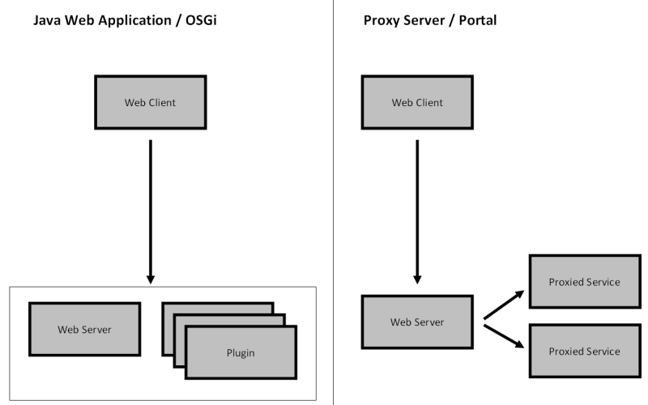
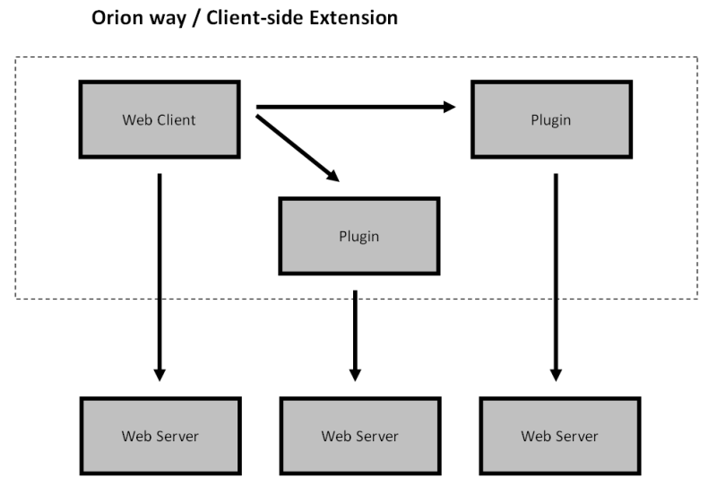

Extending Orion
John Arthorne, Szymon Brandys, and Simon Kaegi
26 March 2012
Orion project is about software development in a browser
- NOT like a desktop IDE (the web is the platform)
- promotes a page-oriented web experience
- addresses “core coding” activities and extensions
- support workflows across a set of linked web pages
Design Principles
- use native browser capabilities
- task oriented / resource-focused
- performant and lightweight
- low barriers to entry for consumers
Modular Client-side Architecture
- Components – Asynchronous Module Definition
- Services/Interfaces – JavaScript Micro Services
- Pluggable Content and Function – Orion Plugins
- Declarative UI – Semantic Parts / Skinnable
Agenda
- Introduction
- Setup and Simple Helloworld Plugin Walkthrough
- Technical overview of Orion plugins
- Main tutorial exercises (Break)
- Advanced Examples and Closing Thoughts
Helloworld Plugin Walkthrough
What are Orion plugins
- Orion plugins are 'separate' HTML pages hosted in non-visible IFrames
- Orion pages are designed to be 'extended' with plugins
- Orion applications are NOT made up of plugins.
- Plugins are isolated and secure against direct modification of the hosting page


Orion plugins redux
- Plugins are just HTML pages that follow a communication protocol
- Advertises “cacheable” capabilities/properties using window.postMessage
- Allows cross-origin communication and independent implementation
- Uses 'Structured Clone Algorithm' to support binary data exchange
Types of Orion Plugins
-
Application Linking (URI Templates / Hyperlinks)
- Link from Navigator to Editor without hard-coding
-
Metadata (Name / Value pairs)
- Action Labels, Cache information, Filters
-
Service Provider (JSON-RPC variant / binary support)
- File Content, Editor Outline, Editor Actions
Markdown in a Nutshell
- Markdown is intended to be as easy-to-read and easy-to-write as possible.
- A Markdown-formatted document should be publishable as-is, as plain text,
and can be read without looking like it’s been marked up with tags or formatting instructions.
- Markdown uses punctuation characters, carefully chosen so as to look like what they mean.
e.g., asterisks around a word actually look like *emphasis*, markdown lists look like lists, etc.
- Markdown can be easily converted to structurally valid XHTML (or HTML).
- The single biggest source of inspiration for Markdown’s syntax is the format of plain text email.
Markdown Syntax Highlights
Block Elements (Paragraphs, Headers, Blockquotes, Lists, etc.)
# This is an equivalent of H1## This is an equivalent of H2> Blockquote* Unordered list item
Span Elements (Links, Emphasis, Code)
**text in bold**inline [link](http://example.com) in text`console.info()` for inline code
Sample Markdown Document
Title
=====
## Header 1
This is a sample text. **Bold** text.
### Header 1.1
Sample list below:
* item 1
* item 2
* item 3
## Header 2
Text with a [link]
[link] http://sample.com "Sample link"
It is easy to read as-is.
... Converted to HTML
<h1>Title</h1>
<h2>Header 1</h1>
<p>This is a sample text. <strong>Bold</strong> text.</p>
<h3>Header 1.1</h2>
<p>Sample list below:</p>
<ul>
<li>item 1</li>
<li>item 2</li>
<li>item 3</li>
</ul>
<h2>Header 2</h1>
<p>Text with a <a href="http://sample.com" title="Sample link">link</a></p>
Title
Header 1
This is a sample text. Bold text.
Header 1.1
Sample list below:
...
orion.file.contenttype
- Tells Orion about a new file type
- Optionally associates information such as display name and image, filenames, and file extensions.
- Does nothing interesting, but used by other services
provider.registerServiceProvider("orion.file.contenttype", {}, {
contentTypes:
[{ id: "text/x-web-markdown",
name: "Markdown",
extension: ["md", "markdown", "mdown","mkd", "mkdn"],
image: "http://szbra.github.com/example2/bin/md.gif"
}]
});
orion.navigate.command
- Adds a command to the menu next to a file in the navigator page
- Declares a single method: run(selection), returning an URL string
- Argument is either a file object, or array of files
provider.registerServiceProvider("orion.navigate.command", {
run : function(item) {
return "http://google.com/#q=" + item.Name;
}}, {
image: "http://google.com/favicon.ico",
name: "Google Search", id: "my.command",
forceSingleItem: true, href: true
});
orion.edit.command
- Registers a command that operates on the contents or selection in an editor
- Declares a single function: run(selectedText, text, selection)
- Returns a string to replace current selection, or an object describing new editor contents and selection
provider.registerServiceProvider("orion.edit.command", {
run : function(text) {
return text.toUpperCase();
}
}, {
name : "UPPERCASE", img : "/images/gear.gif", key : [ "u", true ]
});
orion.edit.highlighter
- Contributes syntax highlighting rules to the editor
- Declarative style: provide a grammar object
- Programmatic style: implement the highlighter algorithm entirely in the plugin
provider.registerServiceProvider("orion.edit.highlighter", {},
type : "grammar", contentType: ["text.markdown"],
grammar: {
patterns: [{
//line starting with '#' is a heading
"match": "^#.*$",
"name": "entity.name.tag.doctype.html"
}]
}
});
orion.edit.contentAssist
- Contributes content assist proposals
- Implements single method: computeProposals(prefix, buffer, selection)
computeProposals: function(prefix, buffer, selection) {
var proposals = [];
if (prefix.length === 0) {
proposals.push({
proposal: "[Link Name](http:// \"Optional Title Here\")",
escapePosition: selection.offset+19});
}
return proposals;
}
orion.edit.outliner
- Contributes outline for a document
- Implements single method: getOutline(contents, title)
- Returns a JSON representation of the document structure
[{
"label" : "Top Level",
"line" : 1,
"children" : [
{"label" : "Child 1", "line" : 2},
{"label" : "Child 2", "line" : 3}
]
}]
orion.edit.validator
- Calculates errors and warnings in a document
- Implements single method: checkSyntax(title, contents)
- Returns a JSON representation of errors and warnings
{"problems" : [{
"description" : "Broken link: [foo]",
"line" : 1,
"start" : 15,
"end" : 20,
"severity" : "error"
}]
Orion at EclipseCon
- Orion BoF: Monday 19:00, Lake Thoreau
- Micro Services in JavaScript: Tuesday 17:00, Grand Ballroom BC
- Language Tooling in Orion: Wednesday 11:15, Grand Ballroom BC
- Developing Cloud Apps with Orion, Django and MongoDB in 30 Minutes or Less: Wednesday 17:00, Reston Suites B